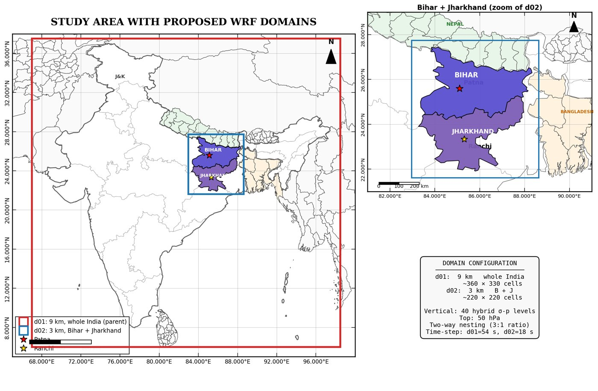
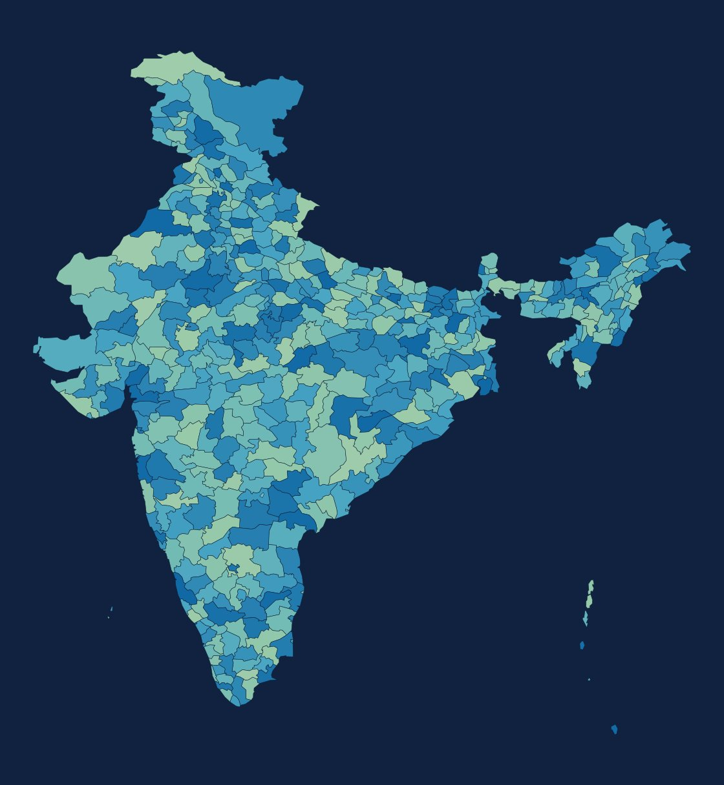

01Data ingestionLandsat 8/9 · Sentinel-2 · MODIS LST · ERA5 · GHSL · SRTM · OSM
▼
02Urban morphologybuilding height · FAR · H/W ratio · sky-view factor · LCZ
▼
03LST modellingphysics-informed Random Forest / XGBoost + bias-corrected NDVI-NDBI slopes
▼
04Heat stressLST -> air temperature -> UTCI -> vulnerability index
▼
05Intervention optimisationGA · NSGA-II · Bayesian · InVEST valuation · SOLWEIG shading
▼
06Dashboard7-page Streamlit app reading outputs/
ISRO BAH 2026 Grand Finalist · second team
Geospatial ML · Optimisation
Six-phase pipeline over Landsat, Sentinel-2, MODIS, ERA5, GHSL, SRTM and OSM: urban morphology (building height, FAR, H/W, sky-view factor, LCZ), physics-informed RF / XGBoost LST models, LST → Ta → UTCI heat-stress and vulnerability, then GA / NSGA-II / Bayesian multi-objective intervention optimisation with InVEST-style valuation and SOLWEIG shading. 7-page Streamlit dashboard.
XGBoostNSGA-IIEarth EngineUTCIStreamlit
01Point cloudSVAMITVA drone LiDAR, LAS/LAZ · 1.5B+ points · 10 villages, 5 states
▼
02DTM generationground filtering -> 2 m Digital Terrain Model
▼
03Hydrologyflow direction · accumulation · low-lying zones · natural flow paths
▼
04Hotspot predictionXGBoost + Isolation Forest + Attention U-Net · F1 0.74-0.90, AUC to 0.91
▼
05Drainage designgraph MST network optimisation · IS-code sizing · cost estimate
▼
06DeliveryFastAPI (8 endpoints) · COG / GPKG / KML · dashboard
MoPR AI/ML Hackathon · National Finalist (Top 38)
Point Clouds · Deep Learning
Turns 1.5B+ LiDAR points into 2 m DTMs, flow paths, waterlogging hotspots and costed drainage networks. XGBoost + Isolation Forest + Attention U-Net (hotspot F1 0.74–0.90, AUC up to 0.91, cross-village transfer AUC 0.86), MST network optimisation, FastAPI with 8 endpoints, OGC-compliant COG / GPKG / KML outputs. IIT Tirupati Navavishkar i-Hub.
Attention U-NetXGBoostLiDARFastAPIGraph MST

WRF d01 9 km India · d02 3 km Bihar + Jharkhand
M.Tech Thesis, IIT Kharagpur
Numerical Weather Prediction · Probabilistic ML
WRF + ML Precipitation Bias Correction
30-year JJAS monsoon climatology (1991-2020) over Bihar and Jharkhand: WRF 4.5.2 two-way nested domain (9 km India / 3 km B+J, 40 levels) with literature-selected physics, run as SLURM array jobs on HPC. WRF output and IMD gridded rainfall extracted into an ML dataset; quantile mapping, Random Forest, XGBoost and a CSGD distributional MLP (Monte-Carlo CRPS loss) benchmarked with year-holdout CV and calibration diagnostics.
WRF / WPSSLURM HPCXGBoostDistributional MLPERA5 / IMD

482 districts served from the platform geodata layer
Full-stack GeoAI · LLM Agent
Solo-built 9-module platform (FastAPI async backend, Next.js/Leaflet frontend, Google Earth Engine) covering flood, drought, groundwater, weather and infrastructure risk for all 482 Indian districts. ML risk scoring (GBM / XGBoost / RF + SHAP), AHP-MCDM susceptibility, an operations-research decision module and GeoCopilot - a guardrailed Llama 3.3 tool-calling agent orchestrating the APIs. 40+ tests, GitHub Actions CI/CD, Docker to Cloud Run.
FastAPINext.jsDockerGCP Cloud RunLlama 3.3 / Groq
Parishkar - LLM Software-Engineering Agent
Bounded coding agent on SWE-bench Lite, graded by the official harness. LangGraph retrieve→plan→edit→test loop, least-privilege MCP tool server, Docker-isolated tests; up to 7/40 resolved. Six-arm retrieval ablation (BM25 vs dense) over all 300 instances with cost and variance reported.
LangGraphMCPGemini / GroqSWE-bench
ConvLSTM encoder–decoder fusing IMD observations, ERA5/ERA5-Land, DEM and land cover at 0.25° to forecast 1–5 day rainfall and Tmax for Madhya Pradesh; PyTorch model behind a Flask what-if dashboard plus an 11-channel TensorFlow model trained on 30 years on a GPU cluster.
ConvLSTMERA5 + IMDFlask
Predicts soil properties from satellite, weather and terrain data with 13+ benchmarked models (classical ML, deep tabular, deep kriging, spatial CNNs), spatial block CV, Area-of-Applicability, and NASA-IBM Prithvi-EO ViT backbones with SHAP and calibrated uncertainty.
PyTorchPrithvi-EOFastAPI
Flood-risk intelligence on Google Earth Engine: Sentinel-1 SAR change detection and Sentinel-2 NDVI/NDWI for susceptibility and inundation mapping; RF / XGBoost / LightGBM risk models with an interactive Streamlit dashboard, deployed on Cloud Run.
Earth EngineSentinel-1LightGBMStreamlit
Random Forest flood-pressure and groundwater-stress models with a Compound Risk Index for co-occurring hazards; SHAP explainability, time-series analysis and a Streamlit GIS decision-support dashboard.
Random ForestSHAPStreamlit
FLUS-based Cellular Automata–ANN for West Bengal (85,286 km² at 30 m): hindcast OA 0.816, Kappa 0.731; a 5-strategy validation framework exposed Figure-of-Merit 0.161 hidden by high OA/Kappa. Kharagpur term project reached 86.8% OA, Kappa 0.78.
FLUSEarth Enginerasterio
Live deforestation / regrowth mapping from multi-temporal Landsat 5–9 via GEE: automated cloud masking, ΔNDVI feature engineering and K-Means clustering into Loss / Stable / Gain - no training labels needed.
LandsatEarth EngineK-Means
9-module interactive Streamlit course on SAR-based flood detection: single-neuron intuition to live PyTorch training with over/under-fitting diagnosis, live Sentinel-1 retrieval via GEE, and an auto-generated 38-slide lecture deck.
PyTorchStreamlitEarth Engine
Agri-IoT & Robotics (B.Tech, AAU)
B.Tech projects at Anand Agricultural University: an Arduino IoT fertigation controller holding 40-55% soil VWC with ~38.5% water savings (presented at IEI National Convention), an ultrasonic-guided Bluetooth spraying rover for vegetable rows (Journal of AgriSearch), and thermal-storage passive solar dryers for beetroot (first-author paper, 2025).
ArduinoIoTFertigation
Offline retrieval + learning-to-rank pipeline on Amazon ESCI (482k products): BM25 vs bge-base dense retrieval with FAISS HNSW (Recall@100 0.500 at 4.5 ms p95, 16.7x faster than exact), LightGBM LambdaMART on 14 features (+18.5% NDCG@10 over BM25), LLM query rewriting and a synthetic A/B experiment simulator.
FAISSLambdaMARTSentence TransformersLLM rewriting
ArcGIS Pro / arcpy workflow for GLOF-prone Beas basin: HAND-based flood inundation and risk zoning, road-segment vulnerability and safe-speed estimation under 1 m flooding, Network Analyst evacuation routing, service-area analysis and optimal emergency-centre location.
arcpyHANDNetwork AnalystOSM
Two streaming Groq / Llama 3.3 Streamlit apps. Saath: PHQ-9 mental-health check-in with a crisis-aware, multilingual (English / Hinglish / Tanglish / Bhojpuri) empathetic listener that always surfaces Indian helplines. Roast Baba: 9-persona, 6-language roast bot with gTTS voice, live on Streamlit Cloud.
Groq / Llama 3.3StreamlitPrompt designSafety routing
Random Forest placement predictor plus a genetic-algorithm counterfactual optimiser that evolves a student profile (skills, backlogs, internships) into the smallest realistic change that flips the prediction to placed. Deployed on Streamlit Cloud.
Random ForestGenetic AlgorithmCounterfactualsStreamlit